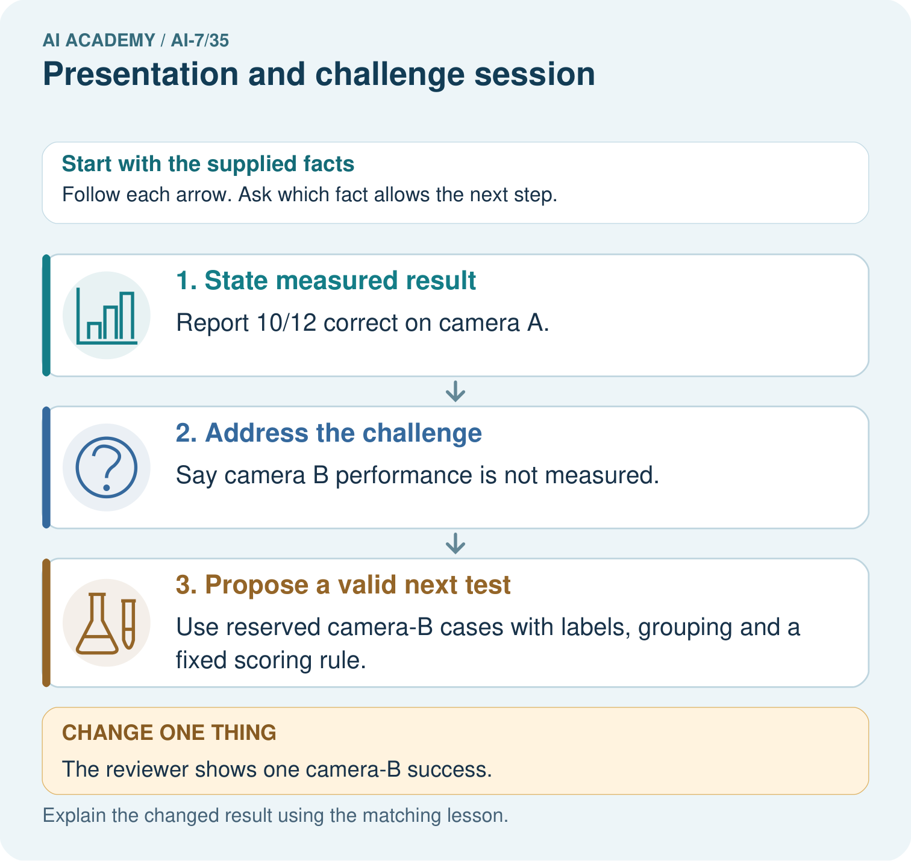
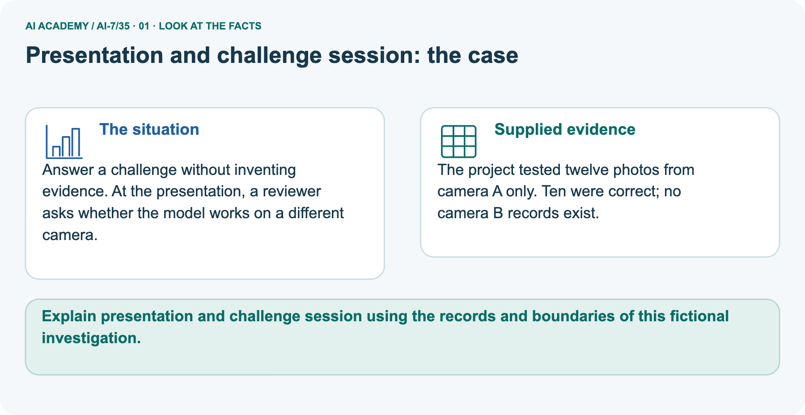
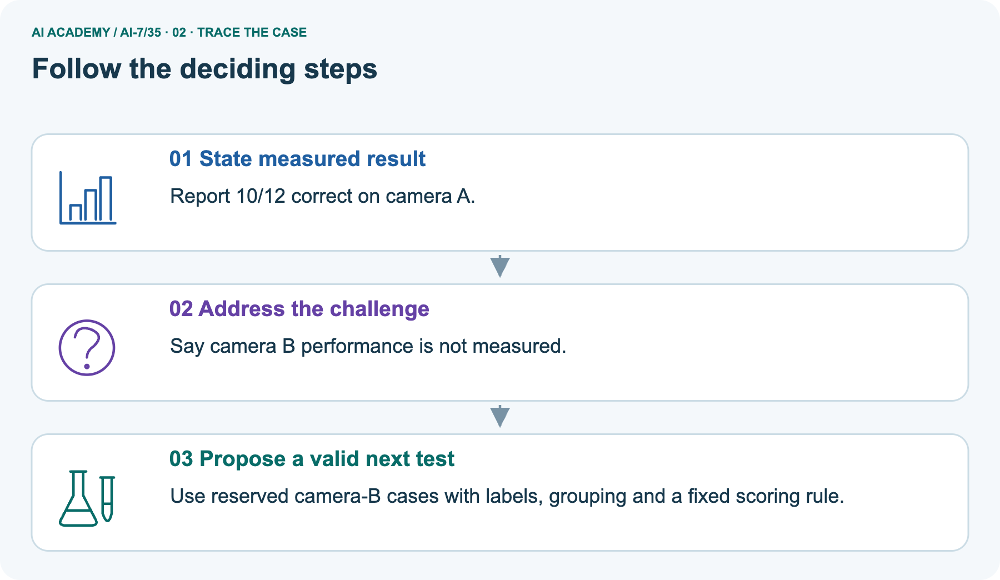
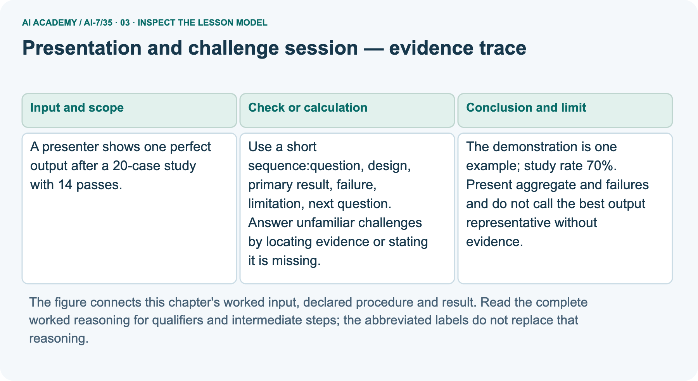
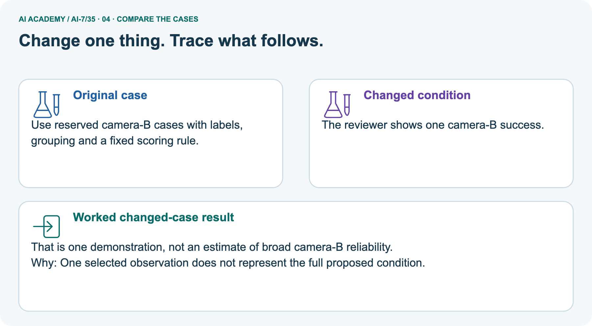
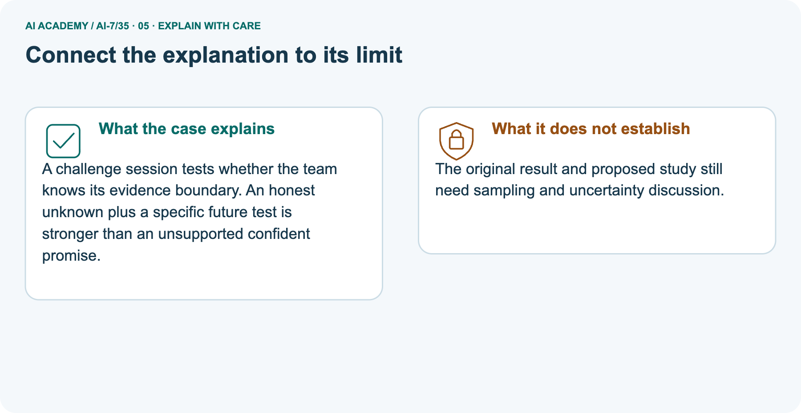
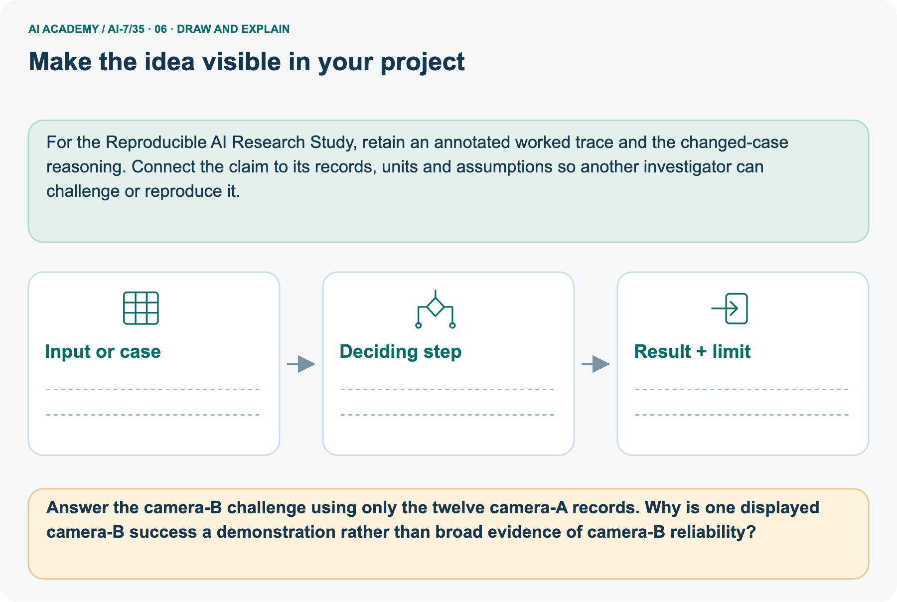

AI Academy · Level 7 · Grade 12 · Week 35 · Workbook
Presentation and challenge session
Learn to understand, design, build, test and explain AI systems responsibly.
Project: Reproducible AI Research Study
THE CONNECTED WEEK
One complete research-case evidence record.
Show the aggregate result, failure evidence and honest unknowns rather than only a best demonstration.
Keep one habit: Recall → W1–W3/W5 → independent case → project evidence → feedback and delayed return.
Main lesson · Section 1
Recall · Retrieve before notes
Keep this task’s inputs,rule and response together.
Complete task and evidence
Try the recall before opening notes. Then use a different colour or a labelled second line to correct your explanation.
Without opening the old lesson, explain one key idea from Final project manuscript. Give an example and a mistake that the idea helps you avoid.
Without opening the old lesson, explain one key idea from Peer review and response. Give an example and a mistake that the idea helps you avoid.
Without opening the old lesson, explain one key idea from Figures that preserve evidence. Give an example and a mistake that the idea helps you avoid.
Final project manuscript
Peer review and response
Figures that preserve evidence
Main lesson · Section 5
W1 · Explain the current example
Keep this task’s inputs,rule and response together.
Complete task and evidence
A research presentation makes the evidence challengeable: question, design, primary result, failure, limitation and next question. Main one perfect output does not replace the fourteen/twenty study rate of 70%. Other six cases are not supplied as passes; exact failure/unassessed detail should come from actual records, not guesses.
Separate original camera-A study has ten of twelve correct, about 83.333%, with no camera-B records. Answer the B challenge by stating that boundary and proposing reserved labelled B cases, grouping and fixed scoring. A later one-off B success is a demonstration, not broad condition coverage or a representative reliability estimate. Keep original and later records separate.
Proposed work stays not run until evidence exists. Sampling and uncertainty remain relevant. A fictional desktop-only project similarly cannot establish mobile performance. The course performs a paper presentation rehearsal, not a live audience interaction or new study.
Explain the weekly mechanism in your own words. Use the worked scenario to name its input, decision rule and output.
Main lesson · Section 6
W2 · Trace the worked case
Keep the supplied inputs, comparison rule and evidence together.
Complete task and evidence
A research presentation makes the evidence challengeable: question, design, primary result, failure, limitation and next question. Main one perfect output does not replace the fourteen/twenty study rate of 70%. Other six cases are not supplied as passes; exact failure/unassessed detail should come from actual records, not guesses.
Separate original camera-A study has ten of twelve correct, about 83.333%, with no camera-B records. Answer the B challenge by stating that boundary and proposing reserved labelled B cases, grouping and fixed scoring. A later one-off B success is a demonstration, not broad condition coverage or a representative reliability estimate. Keep original and later records separate.
Proposed work stays not run until evidence exists. Sampling and uncertainty remain relevant. A fictional desktop-only project similarly cannot establish mobile performance. The course performs a paper presentation rehearsal, not a live audience interaction or new study.
A presenter shows one perfect output after a 20-case study with 14 passes. Show the intermediate steps and give the conclusion with its scope.
| Main presentation step | Evidence-grounded version |
|---|---|
| Selected perfect output | Identify as one demonstration |
| Aggregate primary result | Fourteen of twenty, or seventy percent |
| Remaining six cases | Show actual failure/unassessed record when available; do not invent breakdown |
| Claim best output is representative | Not established by selecting it |
| Failure/limitation slide | Retain concrete supplied evidence and gaps |
| Next question | Propose a bounded test, with not-run status |
| Audience question outside scope | Locate evidence or state it is absent |
Main lesson · Section 7
W3 · Repair a misconception
Keep this task’s inputs,rule and response together.
Complete task and evidence
A research presentation makes the evidence challengeable: question, design, primary result, failure, limitation and next question. Main one perfect output does not replace the fourteen/twenty study rate of 70%. Other six cases are not supplied as passes; exact failure/unassessed detail should come from actual records, not guesses.
Separate original camera-A study has ten of twelve correct, about 83.333%, with no camera-B records. Answer the B challenge by stating that boundary and proposing reserved labelled B cases, grouping and fixed scoring. A later one-off B success is a demonstration, not broad condition coverage or a representative reliability estimate. Keep original and later records separate.
Proposed work stays not run until evidence exists. Sampling and uncertainty remain relevant. A fictional desktop-only project similarly cannot establish mobile performance. The course performs a paper presentation rehearsal, not a live audience interaction or new study.
A report omits this qualification: A confident response should not replace missing evidence with speculation. Explain how omitting it could change a reader's interpretation, and write an accurate replacement.
Main lesson · Section 9
W5 · Explain the limitation
Keep this task’s inputs,rule and response together.
Complete task and evidence
A research presentation makes the evidence challengeable: question, design, primary result, failure, limitation and next question. Main one perfect output does not replace the fourteen/twenty study rate of 70%. Other six cases are not supplied as passes; exact failure/unassessed detail should come from actual records, not guesses.
Separate original camera-A study has ten of twelve correct, about 83.333%, with no camera-B records. Answer the B challenge by stating that boundary and proposing reserved labelled B cases, grouping and fixed scoring. A later one-off B success is a demonstration, not broad condition coverage or a representative reliability estimate. Keep original and later records separate.
Proposed work stays not run until evidence exists. Sampling and uncertainty remain relevant. A fictional desktop-only project similarly cannot establish mobile performance. The course performs a paper presentation rehearsal, not a live audience interaction or new study.
For the worked scenario, propose one additional case that could reveal a failure, describe its expected outcome before running it, and explain what would need to remain fixed for a fair comparison.
Do not reuse W4 as a new final test after receiving feedback.
Main lesson · Section 4
Try alone · Selected transfer
Keep this task’s inputs,rule and response together.
Complete task and evidence
Audience asks if result holds on mobile; only desktop was tested. Give an honest answer.
Attempt this case before feedback. Record any help. Earlier examples below are further practice; a case already practised with feedback cannot establish fresh transfer.
Independent case: Apply a new case independently
Main lesson · Section 10
Project · Keep the research evidence
Preserve the question, protocol, observations, analysis and limits.
Complete task and evidence
For Reproducible AI Research Study, use this week’s independent task as a rehearsal for the final evidence pack: Audience asks if result holds on mobile; only desktop was tested. Give an honest answer.
Keep actual observations separate from expected results, preserve failures, compare a baseline and explain the limits.
Main lesson · Section 11
Feedback · Repair and return
Keep this task’s inputs,rule and response together.
Complete task and evidence
Revisit this idea with your teacher after a delay. Familiarity is different from explaining and using it on a changed case.
| Evidence | My record |
|---|---|
| Worked alone / hint / model | |
| First step I repaired and why | |
| New case checked later; date and result | |
| What I can now explain without notes | |
| One remaining question |
Reference bank and extra practice
Choose the reference that helps your next step.
Reference · Supported W2 record
Reference · Section 2
Reference · Supported W2 record
Keep this task’s inputs,rule and response together.
Complete task and evidence
Use W2: Trace the worked case for Presentation and challenge session. Record the answer once; the lesson and workbook refer to the same attempt.
| Given inputs | Procedure I chose | Middle steps | Result and check |
|---|---|---|---|
Extra practice · Individual reasoning check
Reference · Section 3
Extra practice · Individual reasoning check
Keep this task’s inputs,rule and response together.
Complete task and evidence
Use the worked case for Presentation and challenge session. Proposed explanation: “The worked result establishes every future case”. Decide whether this explanation is supported.
Point to the step or supplied fact that decides; explain your repair if needed.
Reference · Earlier W4 response copy
Reference · Section 8
Reference · Earlier W4 response copy
Keep this task’s inputs,rule and response together.
Complete task and evidence
Audience asks if result holds on mobile; only desktop was tested. Give an honest answer.
Extra practice · Pictured case
Reference · Section 12
Extra practice · Pictured case
Keep this task’s inputs,rule and response together.
Complete task and evidence
Answer a challenge without inventing evidence. At the presentation, a reviewer asks whether the model works on a different camera.
The project tested twelve photos from camera A only. Ten were correct; no camera B records exist.
Answer the camera-B challenge using only the twelve camera-A records. Why is one displayed camera-B success a demonstration rather than broad evidence of camera-B reliability?
Support used: alone / hint / worked example. This record is practice evidence.
Project connection: For the Reproducible AI Research Study, retain an annotated worked trace and the changed-case reasoning.
Connect the claim to its records, units and assumptions so another investigator can challenge or reproduce it.




Reference · Project milestone
Reference · Section 13
Reference · Project milestone
Keep this task’s inputs,rule and response together.
Complete task and evidence
Project: Reproducible AI Research Study
Current milestone: Present and defend. Demonstrate the system, explain one failure and justify the next improvement with evidence.
For the Reproducible AI Research Study, retain an annotated worked trace and the changed-case reasoning. Connect the claim to its records, units and assumptions so another investigator can challenge or reproduce it.
| Evidence to keep | My record |
|---|---|
| This week’s input and deciding step | |
| Prediction and actual result (or labelled paper trace) | |
| One change since the previous checkpoint and why | |
| One error or limit and the next test |
Extra practice · Predict,check and repair
Reference · Section 14
Extra practice · Predict,check and repair
Keep supported feedback separate from the independent case.
First supported question and optional hint
Answer a challenge without inventing evidence. At the presentation, a reviewer asks whether the model works on a different camera.
Which labelled step matches this detail? Use reserved camera-B cases with labels, grouping and a fixed scoring rule.
1. Propose a valid next test
2. State measured result
3. Address the challenge
Hint if needed: Read the steps in the pictorial case. Match the supplied detail to the stage that performs or records it.
Practice 1: explain the deciding evidence
Check after the first attempt
After your attempt, compare with the supported explanation: Propose a valid next test Use reserved camera-B cases with labels, grouping and a fixed scoring rule.
A challenge session tests whether the team knows its evidence boundary. An honest unknown plus a specific future test is stronger than an unsupported confident promise.
Changed-case question and optional hint
Changed-case practice: The reviewer shows one camera-B success. Which conclusion is supported by the supplied facts?
1. We can decide the result without examining the changed input or the procedure.
2. That is one demonstration, not an estimate of broad camera-B reliability.
3. This one example guarantees correct results for every future input.
Hint if needed: Use the changed condition and the deciding step in the pictorial trace. The answer must say what follows from those facts.
Practice 2: explain the deciding evidence
Check after the changed attempt
After your attempt, compare with the supported explanation: That is one demonstration, not an estimate of broad camera-B reliability. One selected observation does not represent the full proposed condition.
Repair and retain the record
Review Final project manuscript (ai-7/34). Goal: Explain the mechanism and terminology of final project manuscript. Short practice: Connect the manuscript’s 7/10 and 8/10 scores to the five-plant grouping.
Which abstract claim must be corrected if it says ten independent plants?. Return to this week and explain what you changed.
Review Peer review and response (ai-7/32). Goal: Explain the mechanism and terminology of peer review and response. Short practice: Count photos and underlying plants in the reviewer’s concern.
What analysis assumption needs revision, and why does changing only the word photos to plants fail to repair it?. Return to this week and explain what you changed.
Review Figures that preserve evidence (ai-7/29). Goal: Explain the mechanism and terminology of figures that preserve evidence. Short practice: Draw count bars for 6/10 and 8/10 using the stated axis.
Why must the denominator and fixed task context remain visible, and what distortion arises from an undisclosed axis start at five?. Return to this week and explain what you changed.
Use Download completed work in the hosted lesson to export your answers, reflections, practice feedback and code-run evidence. Open the HTML copy to read or print it.
Drafts stay in this browser when storage is available; clear drafts on a shared device.
Earlier wording, alternatives and picture transcripts
Use this supported practice once, in the browser or on paper. Keep the reserved independent assessment for a separate first attempt before teacher feedback.
Repair a missing building block
Keep your completed work
Reference · Six-picture response sheets
Reference · Section 15
Reference · Six-picture response sheets
Choose the picture that helps explain the current step.
01. Presentation and challenge session: the case



Answer a challenge without inventing evidence. At the presentation, a reviewer asks whether the model works on a different camera. Supplied facts: The project tested twelve photos from camera A only.
Ten were correct; no camera B records exist.
Point to the given fact that matters most. Explain why it matters.
02. Follow the deciding steps



State measured result: Report 10/12 correct on camera A. → Address the challenge: Say camera B performance is not measured. → Propose a valid next test: Use reserved camera-B cases with labels, grouping and a fixed scoring rule.
Point to each numbered stage and explain which recorded input it uses.
03. Presentation and challenge session — evidence trace



Presentation and challenge session — evidence trace. A presenter shows one perfect output after a 20-case study with 14 passes. | Use a short sequence:question, design, primary result, failure, limitation, next question. Answer unfamiliar challenges by locating evidence or stating it is missing. | The demonstration is one example; study rate 70%. Present aggregate and failures and do not call the best output representative without evidence.
Read the labels and values. Explain the relationship the model shows.
04. Change one thing. Trace what follows.



Original case: Use reserved camera-B cases with labels, grouping and a fixed scoring rule. Changed condition: The reviewer shows one camera-B success.
Expected result: That is one demonstration, not an estimate of broad camera-B reliability. Reason: One selected observation does not represent the full proposed condition.
Predict before checking the worked changed-case result. Name what changed and what the supplied facts allow you to conclude.
05. Connect the explanation to its limit



A challenge session tests whether the team knows its evidence boundary. An honest unknown plus a specific future test is stronger than an unsupported confident promise.
Limit: The original result and proposed study still need sampling and uncertainty discussion.
Explain the case, then point to a limit on the claim.
06. Make the idea visible in your project



For the Reproducible AI Research Study, retain an annotated worked trace and the changed-case reasoning. Connect the claim to its records, units and assumptions so another investigator can challenge or reproduce it.
Draw your input, deciding step, result and limit. Supported question: Answer the camera-B challenge using only the twelve camera-A records.
Why is one displayed camera-B success a demonstration rather than broad evidence of camera-B reliability?
Draw your project trace and justify the deciding step using evidence.